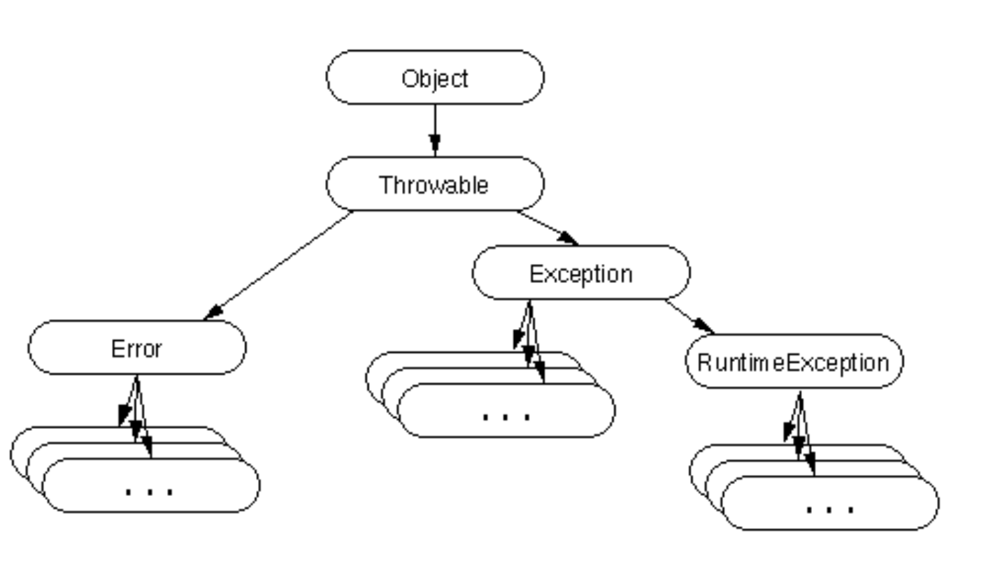

8.0 Exceptions, Interfaces
Exceptions
拼写错误的变量名，访问数组越界 java.lang.ArrayIndexOutOfBoundsException
程序会 “抛出” 一个异常，我们可以“捕获”这个异常并处理它，防止程序崩溃
Try Catch
import java.util.Scanner;
public class ArrayTryCatch {
public static void main(String[] args) {
int[] a = { 882, 2, 11 };
Scanner sc = new Scanner(System.in);
System.out.print("Enter index: ");
int index = sc.nextInt();
try {
System.out.println(a[index]);
} catch (ArrayIndexOutOfBoundsException e) {
System.out.println("Caught ArrayIndexOutOfBoundsException");
}
}
}
只要抓住数组越界这个错误类型，那么就打印错误到屏幕
- 代码第八行可以看到需要输入的是一个整数，那么可能抓不到
InputMismatchException类型的错误，导致程序崩溃
import java.util.Scanner;
import java.util.InputMismatchException;
public class ArrayTryCatch2 {
public static void main(String[] args) {
int[] a = { 882, 2, 11 };
Scanner sc = new Scanner(System.in);
System.out.print("Enter index: ");
try {
int index = sc.nextInt();
System.out.println(a[index]);
} catch (ArrayIndexOutOfBoundsException e) {
System.out.println("Caught ArrayIndexOutOfBoundsException");
} catch (InputMismatchException e) {
System.out.println("Please enter a valid integer next time");
}
}
}
因此可以写多个 catch 捕捉
Exception Control Flow
public class Example {
// 工人 B 的工作：尝试做除法
public static void workerB(int x) {
System.out.println("Worker B starts working...");
int result = 10 / x; // <--- 这里可能会出问题！
System.out.println("Worker B calculated result: " + result);
System.out.println("Worker B finished working.");
}
// 工头 A 的工作：让工人 B 去工作
public static void workerA() {
System.out.println("Worker A starts supervising...");
workerB(0); // <--- 让 workerB 去做除以 0 的计算
System.out.println("Worker A finished supervising.");
}
// 老板 main 的工作：让工头 A 去监督
public static void main(String[] args) {
System.out.println("Main starts the project...");
workerA();
System.out.println("Main finished the project.");
}
}
- 系统发现这个
ArithmeticException的异常对象抛出 workerB在出错的那一行立刻停止执行。System.out.println("Worker B calculated result: " + result);这一行及之后的代码不会**被执行。
- 在
workerB方法内部，出错的这行代码int result = 10 / x;没有被放在try...catch块里。所以，workerB方法无法处理这个异常，它立即终止了。
- 异常向上传递，传递给 14 行发现也没有
try catch块异常处理也立即终止，异常继续向上传递，传给调用WorkA的方法也就是main最后发现还是没有异常处理块，因此这些打印语句均不会被执行都立即终止了，JVM 会终止整个程序的运行
想要解决这个问题在 A 处添加异常处理即可
public class ExampleFixed {
public static void workerB(int x) {
System.out.println("Worker B starts working...");
// 这行仍然可能抛出 ArithmeticException
int result = 10 / x;
System.out.println("Worker B calculated result: " + result);
System.out.println("Worker B finished working.");
}
public static void workerA() {
System.out.println("Worker A starts supervising...");
try {
// 把可能出错的调用放进 try 块
workerB(0);
} catch (ArithmeticException e) {
// 如果 workerB 抛出了 ArithmeticException，这里会捕获它
System.out.println("Worker A caught an issue: " + e.getMessage());
}
// 因为异常被 catch 处理了，程序会继续执行 catch 后面的代码
System.out.println("Worker A finished supervising.");
}
public static void main(String[] args) {
System.out.println("Main starts the project...");
workerA(); // 调用 workerA
System.out.println("Main finished the project."); // 这行现在会被执行了！
}
}
Exceptions and Inheritance
我们需要去决定抓住错误后需要干些什么，有时候打印就够了，有时候需要要求重输入等
另外异常也像 “家族” 一样有继承关系
有一个最老的祖先，叫做 Throwable (代表所有能被抛出的问题)。其有两个分支
Error- 通常是 JVM 内部错误或资源耗尽等严重问题，程序一般没法处理，比如内存溢出
OutOfMemoryError。我们通常不catch这个 Exception下面又有好多分支（子类），把问题分类：IOExceptionRuntimeException
因此 catch (ExceptionType e) 不仅能捕获正好是 ExceptionType 类型的异常，还能捕获所有 ExceptionType 的子类（或孙子类等后代）类型的异常。
catch (FileNotFoundException e)：这是一个小网眼的网，专门用来捕捞“文件找不到”这种具体的鱼。catch (IOException e)：这是一个中等网眼的网，它可以捕捞“文件找不到”(FileNotFoundException) 这条鱼，也能捕捞其他各种 I/O 相关的鱼（比如SocketException），因为它们都属于“IO鱼”这个大类。catch (Exception e)：这是一个非常大的网，几乎可以捕捞所有程序运行时可能遇到的、可处理的鱼（IOException,RuntimeException及其所有子孙后代）。
catch 块利用了继承的多态性，既可以精确捕获特定类型的错误，也可以用一个 catch 块处理一类相关的错误。
throw()
我们使用 StringStack 演示，stack 是最小的数据结构 FILO
public class StringStack {
private String[] data;
private int top;
public StringStack(int capacity) { ... }
public void push(String s) { ... }
public String pop() { ... }
}
StringStack()
构造函数用字符串组填充一定容量，top 代表 stack 顶部索引，随着 push 或 pop 会变动
push()
public void push(String s) {
if (top == data.length) {
throw new RuntimeException("Stack is full");
}
data[top++] = s;
}
可以看到第三行 throw 写法防止堆栈空间已满，生成新的 RuntimeException 逻辑错误对象，第五行 stack 顶更新
pop()
public String pop() {
if (top == 0) {
throw new RuntimeException("Stack is empty");
}
return data[--top];
}
第五行 stack 顶更新
RuntimeException
- 有两种异常：运行时异常和其他所有异常。
- 运行时异常可以导致程序崩溃，它代表了程序中的逻辑错误。
- 它们被称为“未检查异常”，因为你不必检查它们。
- 其他异常叫作 “已检查异常”，你必须用
try-catch来检查它们。

Custom Exception
这里是一个新的异常类，描述了我们的栈已满的情况
- 我们可以通过扩展
Throwable或其子类来创建自己的异常 - 在大多数情况下，你应该只扩展
Exception、RuntimeException或它们的子类 Exception通常用于可恢复的错误，而RuntimeException用于程序错误，Error用于系统错误- 对于我们的栈来说，
RuntimeException可能是一个更好的选择，但我们使用Exception来演示检查型异常
以下文件使用：
public void push(String s) {
if (top == data.length) {
throw new StackFull("Stack can only hold " + data.length + "elements");
}
data[top++] = s;
}
自定义完毕后就可以使用，但是以上代码有一个问题，针对可能抛出受检异常的代码：
- 有些错误是“需要特别注意、必须提前处理或声明”的风险，比如文件找不到 (
IOException)、数据库连接不上 (SQLException)，或者像我们这里定义的“栈满了”（StackFull）。这些就是受检异常。
- 要么使用
try catch当场捕获，要么在方法签名上用throws关键字声明。警告调用者这个方法有抛出这种异常的风险 Unchecked Exception，通常指RuntimeException及其子类，比如NullPointerException,ArrayIndexOutOfBoundsException。Java 不强制你必须声明或捕获它们，因为它们通常被认为是编程逻辑错误
public void push(String s) throws StackFull {
if (top == data.length) {
throw new StackFull("Stack can only hold " + data.length + "elements");
}
data[top++] = s;
}
- A comma-separated list can be used to throw multiple exceptions:
throws Exception1, Excpetion2
那么实际使用过程中一旦调用该 Checked Exception 方法，Java 的规则是 “要么捕获，要么声明”。也就是说，调用者（这里是 main 方法）必须二选一：
- 捕获 (Catch): 使用
try...catch块把调用语句包起来，并在catch部分处理可能发生的StackFull异常。 - 声明 (Declare): 在
main方法自己的签名上也加上throws StackFull，把处理这个异常的责任继续往上（最终会传给 JVM，导致程序可能因未捕获异常而终止）。
public static void main(String[] args) {
StringStack2 ss = new StringStack2(5);
try {
ss.push("Hello");
ss.push("World");
ss.push("!");
ss.push("Hello");
ss.push("World");
ss.push("!");
} catch (StackFull e) {
System.out.println(e);
}
}
这里就会继续执行，因为可以抓住 StackFull 异常
Interfaces
Java 语言不允许类的多重继承。假设我们有两个已经存在的类，分别叫做 A 和 B。那么，如果我们想创建一个新的类 C，让它同时继承 A 和 B 的特性和功能，这是不允许的。你不能写像 class C extends A, B { ... } 这样的代码。在 Java 里，一个类最多只能直接继承 一个 父类 (class C extends A 是可以的)。
- 最主要的原因是为了避免产生歧义和混淆。如果允许一个类同时继承两个父类，可能会出现让编译器或运行时环境 “不知道该听谁的” 的尴尬情况。
- 当你创建一个 C 的对象
c，然后调用c.doWork()时，程序应该执行 A 版本的doWork()还是 B 版本的doWork()呢？这就产生了歧义，不知道该选择哪个实现。如果类 A 有个变量name(类型是 String)，类 B 也有个变量name(类型可能是 int，或者也是 String 但访问权限不同)。
- 与其设计复杂的规则像 C++ 来解决上述的歧义问题，Java 直接禁用多重继承，改用了接口 Interface 解决该问题
- An interface is like a class that only contains abstract methods
接口可以理解为一种纯粹的“合同”或“规范”。它主要就是定义了一系列的方法签名（通常是抽象的，没有实现体），规定了实现这个接口的类必须提供这些方法的具体实现。（注：Java 8 之后接口可以有默认实现等，但核心概念仍是定义规范）。因为接口（传统上）只包含抽象方法，没有具体的实现代码，所以一个类实现多个接口时，就不会遇到前面说的“继承哪个实现”的歧义问题。
implements关键字：当一个类要遵守某个接口的规范时，我们用implements关键字，而不是extends。
- 一个类可以
implements任意数量的接口，用逗号隔开。例如class F implements B, C { ... }，意味着 F 类承诺会实现 B 接口和 C 接口要求的所有方法。
- 一个类可以最多继承一个父类 (
extends)，同时实现任意多个接口 (implements)。例如class D extends A implements B { ... }，意味着 D 继承了 A 的特性（可能包括一些具体实现），并且还承诺遵守 B 接口的规范。
- 如果接口 B 和接口 C 都要求一个
doSomething()方法，实现它们的类 F 只需要提供一个doSomething()的实现，就能同时满足两个接口的要求。
Concepts
public interface Example {
void exampleMethod1(int param);
double exampleMethod2(String s, int x);
}
可以看到定义接口和定义类很像，只是把 class 关键字换成了 interface。
- 一个公开的顶级接口应该放在与接口同名的
.java文件里，顶级接口指的是直接定义在一个.java源文件的最外层、不嵌套在任何其他类或接口内部的接口。一个.java文件中可以有多个顶级类型（类或接口），但最多只能有一个是public的，并且文件名必须与这个public的顶级类型匹配。
// MyInterface.java 文件
package com.example;
// 这个 MyInterface 就是一个顶级接口
public interface MyInterface {
void methodA();
}
// 这个 MyHelperClass 就是一个顶级类 (可以在同一个文件，但只能有一个是 public)
class MyHelperClass {
// ...
}
- 接口里的成员默认就是公开的，
Java 8之前默认抽象，就算不写关键字，非公开成员不符合接口理念
HasLegs Example
接口往往代表了一种契约，可以看到以下代码在实现的时候都有返回桌腿数，遵守了这一准则
class Chair implements HasLegs {
public int countLegs() {
return 4;
}
}
class Person implements HasLegs {
public int countLegs() {
return 2;
}
}
class Spider implements HasLegs {
public int countLegs() {
return 8;
}
}
- 这个
HasLegs接口代表了“拥有可以被计数的腿”这样一种概念或能力。
- 接口通常就用来定义这种抽象的概念、能力、特征或扮演的角色（比如 Java 自带的
Runnable表示“能跑的”，Comparable表示“能比较的”）。
- 接口 (Interface) 通常代表一种概念、特征、能力或规范 (notion or trait)。
- 类 (Class) 通常代表一种具体的事物或对象的类型 (type of thing) （比如
Dog,Table,Robot）。
public class CountLegs {
public static void main(String[] args) {
HasLegs[] things = new HasLegs[3];
things[0] = new Chair();
things[1] = new Person();
things[2] = new Spider();
int sum = 0;
for (int i = 0; i < things.length; i++) {
sum += things[i].countLegs();
}
System.out.println("Total number of legs: " + sum);
}
}
HasLegs[] 可以看到接口可以被当作数组、变量一样使用，就像 Class 一样
MakesSounds Example
abstract class Insect implements HasLegs {
@Override
public int countLegs() {
return 6;
}
}
// 抽象类实现了 HasLegs 接口后覆写默认昆虫有六条腿
class Cricket extends Insect implements MakesSounds {
@Override
public String sound() {
return "Chirp";
}
}
// 获得方法，实现 sound 具体细节
class SqueakyChair implements HasLegs, MakesSounds {
@Override
public int countLegs() {
return 4;
}
@Override
public String sound() {
return "Squeak";
}
}
// 实现多接口
public class SoundExample {
public static void main(String[] args) {
MakesSounds[] things = { new Cricket(), new SqueakyChair() };
for (MakesSounds thing : things)
System.out.println(thing.sound());
HasLegs[] legs = { new Cricket(), new SqueakyChair() };
for (HasLegs leg : legs)
System.out.println(leg.countLegs());
}
}
可以看到 MakeSounds[] 以及 HasLegs[] 直接把接口分别当数组储存其具有相关特性的类使用，然后分别打印其功能，体现了多态性，当然为了用户更方便实现，可以在接口层就直接实现接口继承：
public interface HasLegsAndMakesSounds extends HasLegs, MakesSounds {
// This interface has no methods of its own.
// It inherits the methods from its two parent interfaces.
}
- 可以看到接口也可以继承接口，多接口直接把两个特性提前结合，这样在实现的时候就可以直接将这快速实现同时具备这两种特性的类
abstract class Insect implements HasLegs {
@Override
public int countLegs() {
return 6;
}
}
class Cricket extends Insect implements HasLegsAndMakesSounds {
@Override
public String sound() {
return "Chirp";
}
}
class SqueakyChair implements HasLegsAndMakesSounds {
@Override
public int countLegs() {
return 4;
}
@Override
public String sound() {
return "Squeak";
}
}
public class LegsAndSoundsExample {
public static void main(String[] args) {
HasLegsAndMakesSounds[] things = { new Cricket(), new SqueakyChair() };
for (HasLegsAndMakesSounds thing : things) {
System.out.println(thing.sound());
System.out.println(thing.countLegs());
}
}
}
Interface variables
- 接口可以定义变量（常量）： 接口内部可以定义变量。但要特别注意，接口中定义的任何变量默认都是
public static final的。但是在接口处定义常量是及其少见的，同名常量会直接导致编译错误，接口的主要目的是定义行为而不是储存常量
interface A {
int x = 1;
}
interface B {
double x = 2.0;
}
interface C extends A, B {
// What's the type of C.x?
}
public class DuplicateFields {
public static void main(String[] args) {
System.out.println(C.x);
}
}
default
Java 8 之前接口中只能包含抽象方法没有方法体和常量的概念，所有接口的类必须提供接口中所有抽象方法的具体实现。
interface HasId {
default int getId() {
return 0;
}
public class Admin implements HasId {
// No need to override getId()
}
}
第二行提供了默认方法
- 可能导致多重继承错误： 如果一个类实现了两个不同的接口，而这两个接口恰好都提供了同名同参数的默认方法，那么这个类就必须自己重写这个方法来明确指定到底使用哪个实现或者提供一个全新的实现，否则就会产生编译错误。这使得默认方法虽然灵活，但也需要谨慎使用，通常用于特定场景（如向后兼容地给接口添加新功能）。
这个考试不考
Stack Interface
使用接口实现堆栈概念
public class ArrayStringStack implements StringStack {
private String[] stack;
public ArrayStringStack() {
stack = new String[0];
}
@Override
public String pop() {
// removes this.stack[0] and returns it
}
@Override
public void push(String s) {
// Resizes this.stack with s at position 0
}
@Override
public boolean isEmpty() {
return stack.length == 0;
}
}
这一段使用 Array 实现，很有可能明天要考
public interface StringStack {
String pop();
void push(String s);
boolean isEmpty();
}
public class ArrayStringStack implements StringStack {
private String[] stack;
public ArrayStringStack() {
stack = new String[0];
}
@Override
public String pop() {
if (isEmpty()) {
throw new RuntimeException("Cannot pop from an empty stack.");
}
String topElement = stack[0];
String[] newStack = new String[stack.length - 1];
System.arraycopy(this.stack, 1, newStack, 0, newStack.length);
this.stack = newStack;
return topElement;
}
@Override
public void push(String s) {
String[] newStack = new String[stack.length + 1];
newStack[0] = s;
System.arraycopy(this.stack, 0, newStack, 1, this.stack.length);
this.stack = newStack;
}
@Override
public boolean isEmpty() {
return stack.length == 0;
}
@Override
public String toString() {
if (isEmpty()) {
return "Stack (top=empty): []";
}
// Manually build the string representation
StringBuilder sb = new StringBuilder();
sb.append("Stack (top=");
sb.append(stack[0]);
sb.append("): [");
sb.append(stack[0]);
for (int i = 1; i < stack.length; i++) {
sb.append(", ");
sb.append(stack[i]);
}
sb.append("]");
return sb.toString();
}
可以看到第四十行改写了 Object.toString
Collections
Java 提供了一套标准的框架来存储和管理一组对象（就像一个“集合”）。这就是 Java 集合框架。
Java 集合框架使用接口（如 Collection, List, Set, Queue, Deque）来定义不同类型集合的规范。
框架中没有专门的 Stack 接口，但功能更强大的 Deque（双端队列）接口可以完美地用作栈。推荐使用 ArrayDeque 类作为栈的实现。
Java 中有一个历史遗留的 java.util.Stack 类，但因其设计问题和过时，不推荐在新代码中使用。
import java.util.List; // List 接口
import java.util.ArrayList; // ArrayList 类 (实现 List)
import java.util.Set; // Set 接口
import java.util.HashSet; // HashSet 类 (实现 Set)
import java.util.Map; // Map 接口
import java.util.HashMap; // HashMap 类 (实现 Map)
import java.util.Deque; // Deque 接口 (可作为栈使用)
import java.util.ArrayDeque; // ArrayDeque 类 (实现 Deque)
import java.util.Iterator; // 用于迭代器遍历